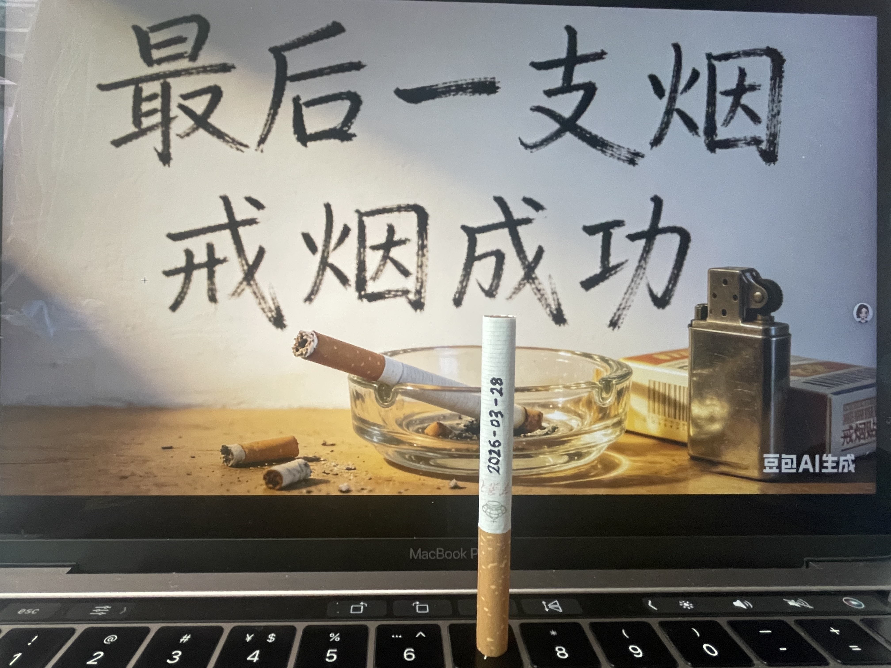
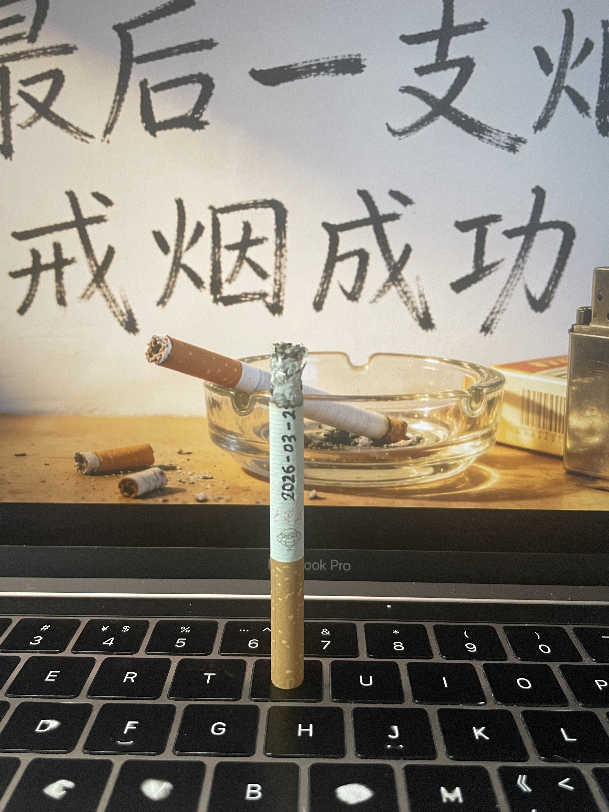

星期六
| 时间 | 事项 | 备注 |
|---|---|---|
| 7:11 | 起床 | 昨晚和表弟聊天聊到很晚，主题是家庭关系之两代人之间的鸿沟。 |
| 7:20-8:30 | 早餐 | 糍粑/水煮玉米/鸡蛋/炒饭 |
| 8:30-9:10 | 家务 | 洗衣服& |
| 9:10-9:30 | 决心戒烟 | 仪式感：抽最后一支烟 |
| 9:30-11:00 | vscode | 让 AI 生成日记列表页面，搞稀烂了，哈哈。 |
| 11:00-12:30 | 午餐 | |
| 12:40-17:00 | 楼顶与隔壁大哥聊天 | 主题：两代人之间的沟通交流 |
| 17:00-17:10 | 去看隔壁阳台装修 | 参观 |
| 17:25-18:10 | 补充日记内容 |
一个囚犯在不停地摇着铁栏杆，绝望地想要出去——但其实在他的左右两边都没有栏杆，都是可以出入自由的。
“你必须采取行动，愿望才能一项项被划掉，”朱莉说，“不然的话那只是一连串你原本有机会实现的空想。”
—— 《也许你该找个人聊聊》 (洛莉·戈特利布)


20260328抽完最后一支烟，最后一次戒烟。之前已经有过几次尝试，但都没有坚持下来。这次我下定决心要彻底戒掉这个坏习惯，不仅为了自己的健康，也为了家人和朋友们的关心和支持。
隔壁栋的大哥（要说是我长辈也合理）是个很有智慧的人，他年龄应该是 60多，儿子女儿在同一栋的不同两个单元，大哥给儿子当保姆，大嫂给他女儿当保姆。今天我们聊了家庭里两代人之间的沟通交流问题，人生的意义以及我们又该以什么样的心态来过好一生。他分享了自己的人生经历和一些宝贵的建议，让我受益匪浅。
我和他说了我这两天纠结老爸抽烟的这事儿。他表示能感同身受，完全理解并支持我的做法。人各有命，不强求，顺其自然。
用他的话来说，人啦，怎么开心怎么活，没有啥值得纠结的事。另外说到他对待儿女的态度，少说多做，不顺眼的东西一侓当做没看到。